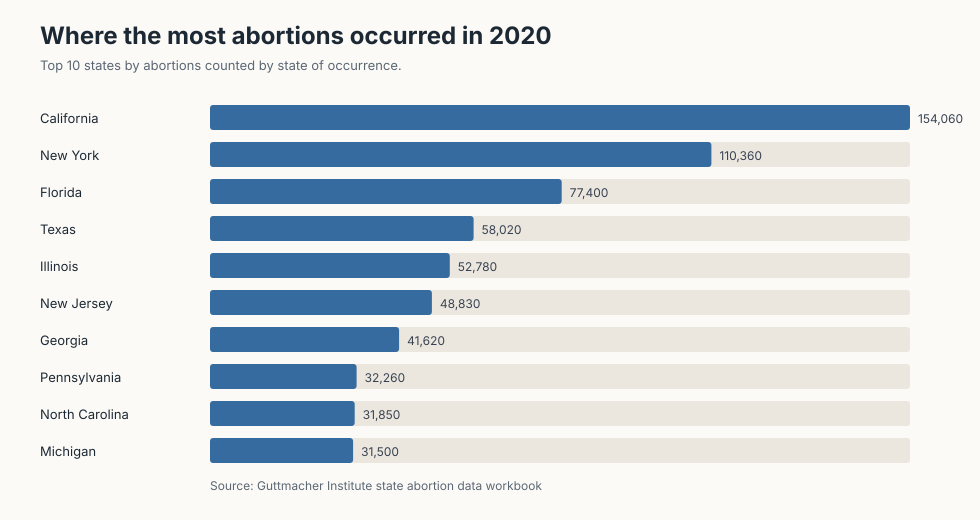
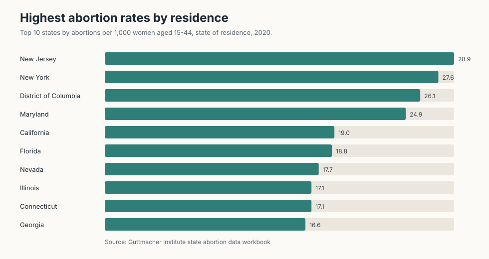
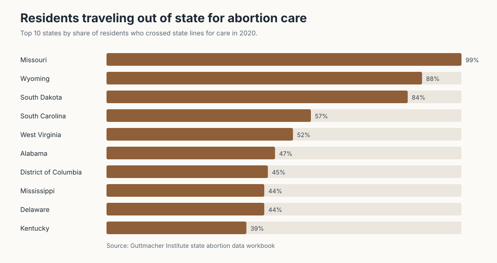
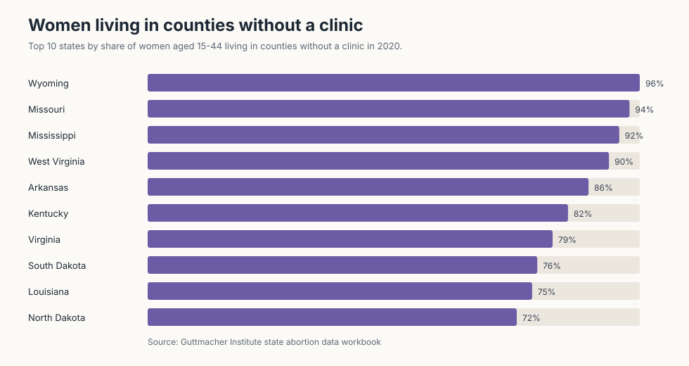
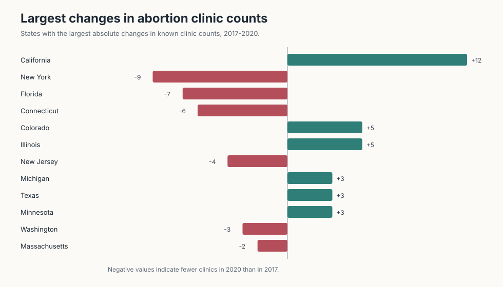
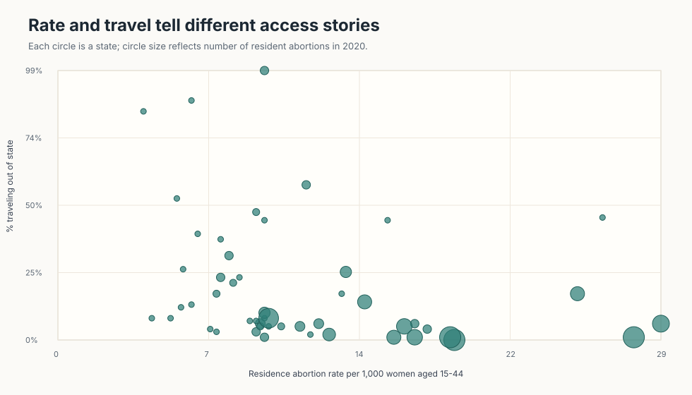

DSC 209R / Static visualization proposal
Abortion Access and Travel Across U.S. States
01 / Brief writeup
What I intend to do
I plan to use the Guttmacher state-level abortion dataset to compare how abortion incidence, provider availability, and travel burden varied across U.S. states before the Dobbs decision.
The main question is whether high abortion counts tell the same story as access measures such as clinic availability and the share of residents traveling out of state for care.
I will separate measures based on state of occurrence from measures based on state of residence, because those two views can point to different access patterns.
The visualizations focus on rankings, rate comparisons, and changes in clinic counts from 2017 to 2020.
Because the dataset combines counts, percentages, rates, and historical public funding measures, I will avoid treating every column as directly comparable.
The intended final story is about uneven geographic access: where abortions happened, where residents lived, and where travel became part of the care pathway.
02 / Static visualizations
Six starting views of the dataset












03 / Source notes
Dataset handling
The source workbook is GuttmacherInstituteAbortionDataByState.xlsx. I exported the state sheet to CSV and generated each chart as a static SVG.
Measures come from different years in the workbook, including 2014 provider access, 2017 teen abortion rates, 2017-2020 clinic changes, and 2020 abortion incidence. The charts label the year used so the views are not read as one single time snapshot.